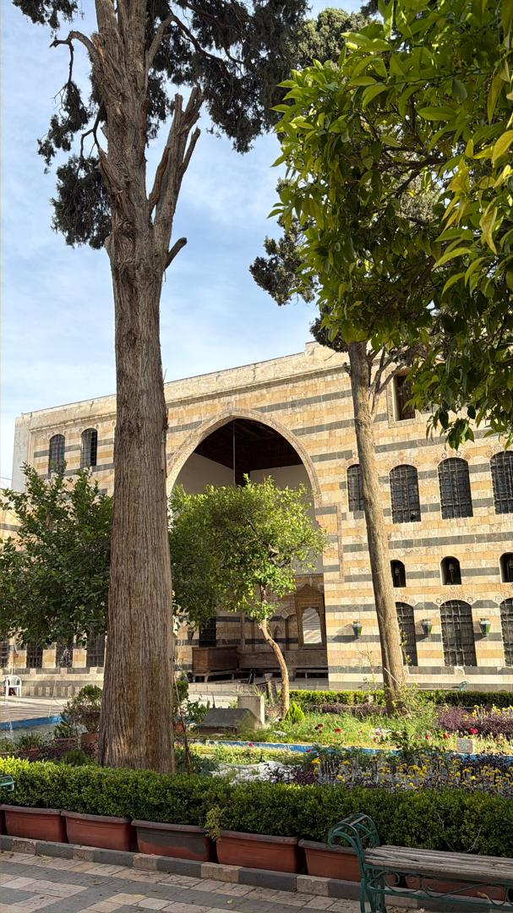
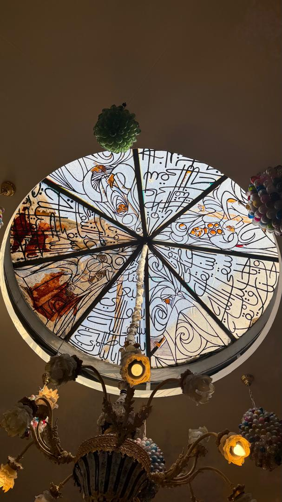
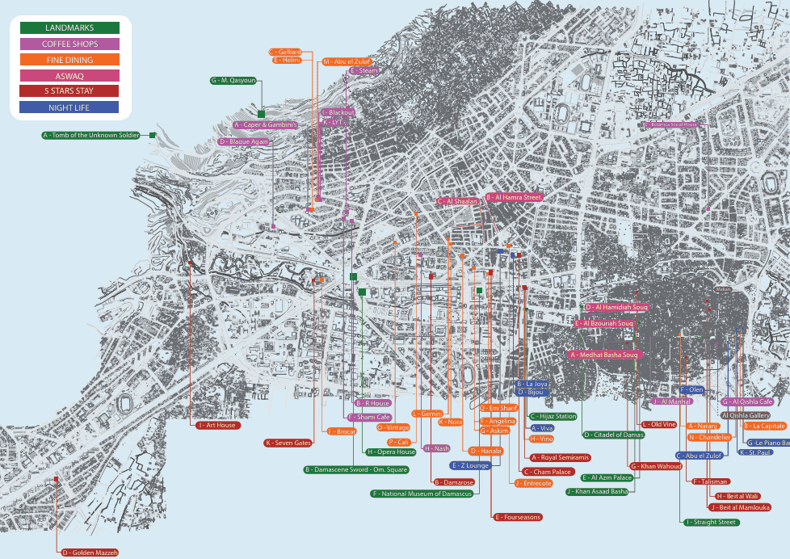

أهلا بكم في الدليل السياحي
اكتشف جمال بلادنا
الرئيسية > الدليل السياحي
لكل محافظة روحها الخاصة التي تميزها.
من المفيد أن تعرف ما يوجد في بلدنا من مطاعم وأماكن ترفيهية، ولهذا سنقدم لكم خدمة الدليل السياحي ليكون نقطة الانطلاق لكم، سواء كنت سائحًا من الخارج أو كنت من البلد وتريد اكتشاف الجديد والرائج بشكل أسرع وأجمل.
دليلنا السياحي سيقدم تفاصيل لكل محافظة تختارها، وستشاهد أبرز المطاعم والكافيهات والمعالم والنايت كلوب والفنادق، في حال كنت تريد الإقامة لفترة معينة.
تفاصيلنا ستكون كافية وغزيرة، ويمكنكم معرفة المزيد باختياركم المحافظة.
قريباً!!
سنقوم بإطلاق تطبيقنا الجديد في سوريا، ليتمتع بميزات لم تكن موجودة من قبل، ونمنحكم تجربة لن تنسوها.



المعلومات التي تصلنا هي معلومات دقيقة وحديثة، وسنعمل على تحديث قاعدة البيانات باستمرار حتى لا تشعروا بأي اختلاف أثناء بدء التجربة.
دقة المعلومات
95%
الأماكن التي تم تغطيتها
40%
تم اختيار الأماكن بناءً على التقييم المحلي، واختيارنا للمعالم سيكون بهدف رسم الصورة الثقافية السورية الرائعة في عقولنا. أما المطاعم والكافيهات والنايت كلوب، فقد تم اختيار الأشهر منها والتي تقدم أجمل التجارب، مع العلم أنه سيتم إضافة وتجديد القوائم بشكل مستمر.